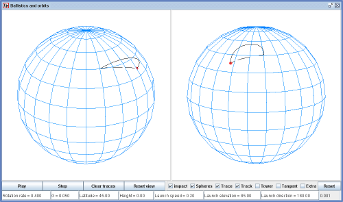

正在運行的模擬規模的半截圖。
模擬顯示接近地球彈道軌跡。左側面板顯示的軌跡和它的相對於跟踪到慣性坐標系中，在右邊的面板表示從一個角度上說是共旋轉與地球上看到的軌跡和它的痕跡。
在彈道，兩個不同旋轉的地球效應在作用。
對於旋轉速度和重力加速度“G”的值不預設為匹配地球上的情況。另外變量“G”未匹配萬有引力的法則的標準“G”。包括變量的旋轉速度和發射速度，其目的是使它們可修改。已選擇了默認設置，從而獲得一個展示。
空氣阻力的影響不包括在內，所以結果只適用於無大氣天體。
以下值可調：
Checking the box 'Extra' will open a small separate window containing radio buttons for some presets.點擊下方“更多”會開小會開啟更多選項。
選項“地球靜止軌道'設置'G'，使仿真模型地球的值。地球的（平均）半徑6371公里，和地球靜止衛星沿軌道移動與42164公里半徑。在這個模擬地球半徑為高度的一個單位，所以對地靜止軌道的高度出來作為5.62單位。
選項“低地球軌道'具有關於'旋轉速度”和“G”相同的值，但軌道非常接近的表面上。你看環遊16倍的物體對地球旋轉一周時，就像低地球軌道國際空間站需要大約90分鐘繞地球一圈每一個。
下面EJS模型顯示旋轉物理學的各個方面：
造訪 Physics of Rotation website for additional information about these models.
The Ballistics and Orbits Model was created by Cleon Teunissen using the Easy Java Simulations (EJS) authoring and modeling tool. You can examine and modify this EJS model by right-click within the running program and select "Open EJS Model" from the pop-up menu to copy the model's XML description into EJS. You must, of course, have EJS installed on your computer.
Information about EJS is available at: <http://www.um.es/fem/Ejs/> and in the OSP comPADRE collection <http://www.compadre.org/OSP/>.